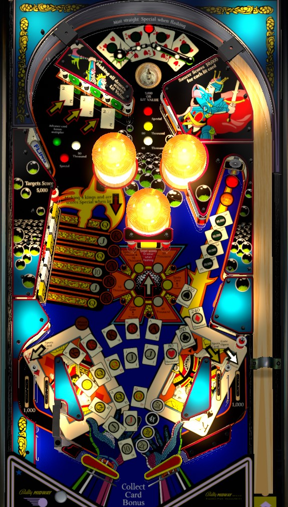

This game is nicknamed Kings of Right Target for a reason. Shoot the right standup (referred to as the 3s Target by the game) repeatedly, get control of the rebound, and repeat. Hitting this target advances is own value up to 200,000 per hit, and also eventually lights itself for extra ball and Special.
The value of the right target is the sum of the lit green lights. It begins at 20,000 points per shot and increases by 20,000 for each subsequent hit.
After being hit for 100,000, the target will light for extra ball; the hit after will be worth 120,000 and continue the pattern.
After being hit for 180,000, the target will light for Special. Any hits to this target after collecting the special are worth 200,000 points.
Extra ball can be set to be worth 25,000 points.
Special can be set to be worth a free game, an extra ball, or 50,000 points.
Scoring on this right target is so unbalanced that this entire game should never be seen in competition play unless the operator has installed a modified ROM that completely reworks scoring. If you encounter this game on location, figure out the feed from the right target return and enjoy your free score roll and grand champion.
Entirely irrelevant. Maybe someday I'll learn the rest of the rules and put them here for completion's sake, but in practice literally everything in the game comes with far more risk and far less reward than just whacking the ball toward the right target repeatedly.
Note when first approaching this table that the left in lane/out lane setup is reversed, as this may change your strategy about how to nudge or get the ball under control. The gate just above the left flipper is one-way, so the ball can't roll up the flipper and fall into the out lane.